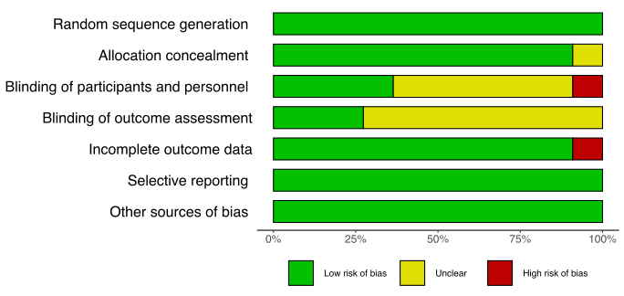
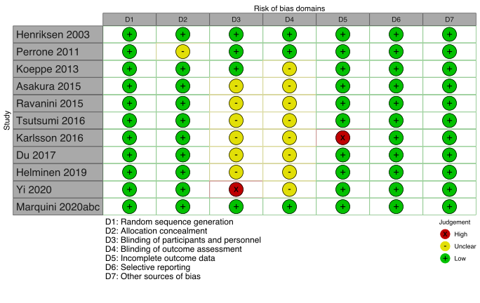
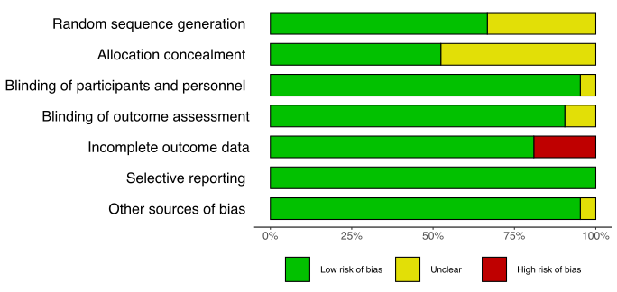

Protein/Carbohydrate Containing Drinks
19 February, 2021 (16:30)
Last updated: 2021-02-19
Checks: 7 0
Knit directory: Fasting/
This reproducible R Markdown analysis was created with workflowr (version 1.6.2). The Checks tab describes the reproducibility checks that were applied when the results were created. The Past versions tab lists the development history.
Great! Since the R Markdown file has been committed to the Git repository, you know the exact version of the code that produced these results.
Great job! The global environment was empty. Objects defined in the global environment can affect the analysis in your R Markdown file in unknown ways. For reproduciblity it’s best to always run the code in an empty environment.
The command set.seed(20201201) was run prior to running the code in the R Markdown file. Setting a seed ensures that any results that rely on randomness, e.g. subsampling or permutations, are reproducible.
Great job! Recording the operating system, R version, and package versions is critical for reproducibility.
Nice! There were no cached chunks for this analysis, so you can be confident that you successfully produced the results during this run.
Great job! Using relative paths to the files within your workflowr project makes it easier to run your code on other machines.
Great! You are using Git for version control. Tracking code development and connecting the code version to the results is critical for reproducibility.
The results in this page were generated with repository version 07ae851. See the Past versions tab to see a history of the changes made to the R Markdown and HTML files.
Note that you need to be careful to ensure that all relevant files for the analysis have been committed to Git prior to generating the results (you can use wflow_publish or wflow_git_commit). workflowr only checks the R Markdown file, but you know if there are other scripts or data files that it depends on. Below is the status of the Git repository when the results were generated:
Ignored files:
Ignored: .DS_Store
Ignored: .Rhistory
Ignored: .Rproj.user/
Untracked files:
Untracked: _site.yml_back
Untracked: analysis/american-medical-association.csl
Untracked: analysis/anesthesiology.csl
Untracked: analysis/cho.bib
Untracked: analysis/cho_010420_old.Rmd
Untracked: analysis/gum.bib
Untracked: analysis/gum.ris
Untracked: analysis/jama.csl
Untracked: analysis/protein.bib
Untracked: bp.csv
Untracked: cho_clin_rob_summary.png
Untracked: cho_clin_rob_traffic.png
Untracked: cho_likert_hunger.csv
Untracked: cho_likert_hunger_011221.xlsx
Untracked: cho_likert_thirst.R
Untracked: cho_pro_rob_traffic.svg
Untracked: cho_refid.csv
Untracked: cho_refids.csv
Untracked: cho_refids.xlsx
Untracked: cho_studies.csv
Untracked: cho_studies.xlsx
Untracked: code/calculations.R
Untracked: code/discard.R
Untracked: code/fasting_descriptive.R
Untracked: code/functions.R
Untracked: code/helpers.R
Untracked: code/hrs.R
Untracked: code/metaHungerClear.R
Untracked: code/readFiles_021421_wfr.R
Untracked: code/robGum.R
Untracked: code/rob_021121.R
Untracked: code/rob_protein.R
Untracked: code/rob_summary.R
Untracked: code/rob_traffic_light.R
Untracked: code/rob_traffic_light_mg.R
Untracked: code/snips.R
Untracked: code/test.txt
Untracked: data/CHOComplicationList_012521.xlsx
Untracked: data/GumOutcomes_102820.xlsx
Untracked: data/ProteinSOE_013121.xlsx
Untracked: data/ProteinSOE_121620.xlsx
Untracked: data/SOE_CHO_021121.xlsx
Untracked: data/SOE_CHO_021521.xlsx
Untracked: data/SOE_CHO_021821.xlsx
Untracked: data/SOE_CHO_021921.xlsx
Untracked: data/SOE_Gum_020421.xlsx
Untracked: data/SOE_Protein_021021.xlsx
Untracked: data/contOutcomes_2021-02-14-14-03-41.csv
Untracked: data/dichotOutcomes_2021-02-14-14-01-56.csv
Untracked: data/dichotOutcomes_2021-02-18-17-16-38.csv
Untracked: data/distillersr-Preoperative_Fasting_2020-07-08-17-59-49.xlsx
Untracked: data/fasting_table_add_102720.csv
Untracked: data/gum_soe_112120.xlsx
Untracked: data/hunger_rob_summary.svg
Untracked: data/hunger_rob_traffic.svg
Untracked: data/incl_mg_distsr_fasting_2020-11-21.csv
Untracked: data/likertOutcomes_2021-02-14-14-02-14.csv
Untracked: data/protein_detail_102320.xlsx
Untracked: data/rob_2021-02-14-14-02-33.csv
Untracked: data/studyArm_2021-02-14-14-04-27.csv
Untracked: data/studyArm_2021-02-14-14-04-45.csv
Untracked: data/studyChar_2021-01-22-21-00-28.csv
Untracked: data/studyChar_2021-02-14-14-05-04.csv
Untracked: data/~$SOE_CHO_021921.xlsx
Untracked: drink_table.csv
Untracked: figures/
Untracked: likert_cho_hung.csv
Untracked: likert_cho_hung.xlsx
Untracked: likert_cho_hung_kbl.csv
Untracked: likert_cho_hung_kbl.xlsx
Untracked: notes.txt
Untracked: outcome_list.txt
Untracked: protAddCode.R
Untracked: prot_120820_OLD.Rmd
Untracked: prot_clin_rob_summary.svg
Untracked: prot_clin_rob_traffic.svg
Untracked: prot_pro_rob_summary.svg
Untracked: prot_pro_rob_traffic.svg
Untracked: protein_120820.html
Untracked: protein_combined_120820.html
Untracked: protein_combined_120820_old.Rmd
Untracked: readFiles_120220_wfr.R
Untracked: time1.csv
Untracked: times.csv
Untracked: used_files_dates.txt
Unstaged changes:
Deleted: analysis/protein_combined_120820.Rmd
Modified: code/readFiles_120220_wfr.R
Note that any generated files, e.g. HTML, png, CSS, etc., are not included in this status report because it is ok for generated content to have uncommitted changes.
These are the previous versions of the repository in which changes were made to the R Markdown (analysis/protein_012621.Rmd) and HTML (docs/protein_012621.html) files. If you’ve configured a remote Git repository (see ?wflow_git_remote), click on the hyperlinks in the table below to view the files as they were in that past version.
| File | Version | Author | Date | Message |
|---|---|---|---|---|
| html | 98e4200 | Mark Grant | 2021-02-19 | Build site. |
| html | daf753e | Mark Grant | 2021-02-18 | Build site. |
| html | 1266320 | Mark Grant | 2021-02-15 | Build site. |
| html | 8c39082 | Mark Grant | 2021-02-15 | Build site. |
| Rmd | 9838fe4 | Mark Grant | 2021-02-15 | wflow_publish(c("analysis/_site.yml“,”analysis/index.Rmd“,”analysis/chewing_gum_121620.Rmd", |
| html | 07a7d81 | Mark Grant | 2021-02-11 | Build site. |
| Rmd | ab3e0d4 | Mark Grant | 2021-02-11 | wflow_publish(c("analysis/_site.yml“,”analysis/index.Rmd“,”analysis/chewing_gum_121620.Rmd", |
| html | 1e826bb | Mark Grant | 2021-02-03 | Build site. |
| Rmd | e3e17e6 | Mark Grant | 2021-02-03 | wflow_publish(c("analysis/_site.yml“,”analysis/index.Rmd“,”analysis/chewing_gum_121620.Rmd", |
| html | f0fa277 | Mark Grant | 2021-01-29 | Build site. |
| Rmd | 2decc83 | Mark Grant | 2021-01-29 | wflow_publish(c("analysis/_site.yml“,”analysis/index.Rmd“,”analysis/chewing_gum_121620.Rmd", |
Included Studies
Table 1. Number of included studies according to age, surgery, and design.
| Design | Surgicala | Non-surgical | Surgical | Non-surgical |
|---|---|---|---|---|
| RCT | 19 | 1 | 0 | 1 |
| Crossover | 0 | 6 | 0 | 0 |
| Nonrandomized | 1 | 0 | 0 | 0 |
| Retrospective Cohort | 1 | 0 | 0 | 0 |
| Total | 21 | 7 | 0 | 1 |
| RCT: randomized controlled trial | ||||
| a Includes 1 endoscopy study. |
Table 2. Included studies according to design, age, centers, country, type of surgery or procedure, and design (see References for citations).
| ID | Study | Analyzed (N) | Centers | Countrya | Surgery |
|---|---|---|---|---|---|
| Adult, Surgical | |||||
| RCT | |||||
| 5479 | Henriksen 2003 | 48 | 1 | Denmark | Other GI |
| 3823 | DNascimento 2011 | 50 | 1 | Brazila | Cholecystectomy |
| 3670 | Perrone 2011 | 17 | 1 | Brazila | Cholecystectomy |
| 3282 | DNascimento 2012a | 28 | 1 | Brazila | Cholecystectomy |
| 3513 | DNascimento 2012b | 48 | 1 | Brazila | Cholecystectomy |
| 2940 | Koeppe 2013 | 98 | 1 | Brazila | Endoscopy |
| 3090 | Pexe-Machado 2013 | 22 | 1 | Brazila | Other GI |
| 2806 | deANascimento 2014 | 24 | 1 | Brazila | Other GI |
| 2234 | Asakura 2015 | 134 | 1 | Japan | Various |
| 2256 | Ravanini 2015 | 38 | 1 | Brazila | Cholecystectomy |
| 2482 | Singh 2015a | 20 | 1 | Indiaa | Oral |
| 1993 | Karlsson 2016 | 73 | 1 | Sweden | Other GI |
| 1795 | Tsutsumi 2016 | 24 | 1 | Japan | Various |
| 1102 | van Stijn 2018 | 18 | 1 | Netherlands | Other GI |
| 466 | Helminen 2019 | 108 | 1 | Finland | Cholecystectomy |
| 165 | Marquini 2020ab | 74 | 1 | Brazila | Gyn |
| 6446 | Marquini 2020bb | 74 | 1 | Brazila | Gyn |
| 247 | Marquini 2020cb | 74 | 1 | Brazila | Gyn |
| 245 | Yi 2020 | 118 | 1 | Malaysiaa | Gyn |
| Nonrandomized Studies of Interventions | |||||
| 3588 | Oyama 2011 | 121 | 1 | Japan | Various |
| Retrospective Cohort | |||||
| 6142 | Blum 2019 | 100 | 1 | USA | TKA/THA |
| Adult, Nonsurgical | |||||
| RCT | |||||
| 233 | Pai 2020 | 19 | 1 | USA | None (healthy) |
| Crossover | |||||
| 4092 | Lobo 2009 | 20 | 1 | UK | None (healthy) |
| 3728 | Awad 2011 | 10 | 1 | UK | None (healthy) |
| 2759 | Brianez 2014 | 11 | 1 | Brazila | None (healthy) |
| 2703 | Nakamura 2014 | 10 | 1 | Japan | None (healthy) |
| 1677 | Gomes 2017 | 20 | 1 | Brazila | None (healthy) |
| 6280 | Bisinotto 2019 | 34 | 1 | Brazila | None (healthy) |
| Pediatric, Nonsurgical | |||||
| RCT | |||||
| 1315 | Du 2017 | 48 | 1 | USA | None (healthy) |
| Multiple publications of the same study. | |||||
| a Non very high Human Development Index country. | |||||
Patient Reported Outcomes
Surgical/Endoscopy Studies
Hunger
Table 3. Occurrence of hunger according to fasting, liquid and volume.
| Study | N | Liquid | > 6 | 6→2 | ≤ 2 | (hr) | N (%) | CHO vs. Fasting | |
|---|---|---|---|---|---|---|---|---|---|
| Adult, Surgical | |||||||||
| RCT | |||||||||
| Koeppe 2013b | 48 | Fasting | 0 | 32 (67) | 0.39 (0.17, 0.89) | ||||
| 50 | Prot/CHO | 200 | 22 (44) | ||||||
| RCT: randomized controlled trial; OR: odds ratio; CHO: carbohydrate; Prot: protein. | |||||||||
| a At time of endocoscopy = 0 | |||||||||
| b ‘Did you feel hunger during the fasting period?’ | |||||||||
Table 4. Comparative hunger ratings in included studies (surgical and nonsurgical) according to fasting, liquid and volume.
| Study | Liquid | N | > 6 | 6→2 | ≤ 2 | Time (hr)a | Scaleb | M (95% CI) | Med (IQR) | Range |
|---|---|---|---|---|---|---|---|---|---|---|
| Adult, Surgical | ||||||||||
| RCT | ||||||||||
| Tsutsumi 2016 | Water | 12 | 450 | 0 | 0→100 | 43 | (30-59) | |||
| Prot/CHO | 12 | 600 | 13 | (3-20) | ||||||
| P = 0.001; MDg ≈ -31.1 (95% CI, -36.9 to -25.3) | ||||||||||
| Helminen 2019 | Fasting | 56 | 0 | 0→100 | 18 (5-50) | |||||
| Prot/CHO | 57 | 200 | 10 (0-30) | |||||||
| MDg ≈ -11.2 (95% CI, -21.9 to -0.4) | ||||||||||
| 2-hr post-op MD 2.8 (95% CI, -8.1 to 13.7) | ||||||||||
| Marquini 2020c | Waterc | 40 | 200 | 10 | 0→10 | 3.9 (2.9-4.8) | 4 | (0-10) | ||
| Prot/CHO | 34 | 200 | 2.1 (1.0-3.1) | 0 | (0-8) | |||||
| P = 0.4; MDh -1.8 (95% CI, -2.0, -1.5) | ||||||||||
| Nonrandomized Studies of Interventions | ||||||||||
| Oyama 2011 (AM) | Fasting | 26 | 0 | 1→5 NRS | 2.5 (0.5-4.5)d | |||||
| Prot/CHO | 27 | 300 | 200 | 3 (1-5) | ||||||
| MDg ≈ 0.5 (95% CI, -1.1 to 2.1) | ||||||||||
| Oyama 2011 (PM) | Fasting | 35 | 0 | 1→5 NRS | 4 (2-6)d | |||||
| Prot/CHO | 33 | 500 | 300 | 3 (1-5) | ||||||
| MDg ≈ 1.0 (95% CI, -0.4 to 2.4) | ||||||||||
| Pediatric, Nonsurgical (age 8-14 years) | ||||||||||
| 0 hr | ||||||||||
| Du 2017 | Juicee | 16 | 296 | 2 | 5→1 HSSf | 2.0 (1.6-2.4) | ||||
| Milk | 16 | 296 | 2.0 (1.3-2.6) | |||||||
| Prot/CHO | 16 | 296 | 2.2 (1.7-2.6) | |||||||
| CHO vs. apple juice or milk, p=0.78 | ||||||||||
| RCT: randomized controlled trial; M: mean; Med: median; IQR: interquartile range; NRS: numeric rting scale; MD: mean difference. | ||||||||||
| a When outcome assessed relative to surgery where 0 is prior to induction and other values hours postop or rlative to liquids in nonsurgical studies. | ||||||||||
| b Arrow (→) indicates best to worst hunger (all visual analogue except Du 2017 and Oyama 2011). | ||||||||||
| c Distilled water, 4 drops red dye, 2 drops sucrose. | ||||||||||
| d Range as reported but apparent error being <1 or >5. | ||||||||||
| e Apple juice. | ||||||||||
| f Hunger Satiety Scale. | ||||||||||
| g Estimated using reported medians, IQRs, and ranges. | ||||||||||
| h Calculated from means and confidence intervals. | ||||||||||
Thirst
Table 5. Occurrence of thirst according to fasting, liquid and volume.
| Study | N | Liquid | > 6 | 6→2 | ≤ 2 | (hr) | N (%) | CHO vs. Fasting | |
|---|---|---|---|---|---|---|---|---|---|
| Adult, Surgical | |||||||||
| RCT | |||||||||
| Koeppe 2013b | 48 | Fasting | 0 | 26 (54) | 0.72 (0.33, 1.60) | ||||
| 50 | Prot/CHO | 200 | 23 (46) | ||||||
| RCT: randomized controlled trial; OR: odds ratio; CHO: carbohydrate; Prot: protein. | |||||||||
| a At time of endocoscopy = 0 | |||||||||
| b Report of thirst.’ | |||||||||
Table 6. Comparative thirst ratings according to fasting, liquid and volume.
| Study | Liquid | N | > 6 | 6→2 | ≤ 2 | Time (hr)a | Scaleb | M (95% CI) | Med (IQR) | Range |
|---|---|---|---|---|---|---|---|---|---|---|
| Adult, Surgical | ||||||||||
| RCT | ||||||||||
| Henriksen 2003 | Water | 16 | 0 | 0→10 | 3.4 (1.8-7.5) | |||||
| CHO | 17 | 400 | 400 | 3.2 (0.6-3.4) | ||||||
| Prot/CHO | 15 | 400 | 400 | 3.1 (0.2-3.3) | ||||||
| Differences between groups not detected | ||||||||||
| Tsutsumi 2016 | Water | 12 | 450 | 0 | 0→100 | 28.0 | (13-30) | |||
| Prot/CHO | 12 | 600 | 12.0 | (10-15) | ||||||
| P = 0.01; MDe≈ -13.3 (95% CI, -16.4 to -10.2) | ||||||||||
| Helminen 2019 | Fasting | 56 | 0 | 0→100 | 40.0 (8.0-63.0) | |||||
| Prot/CHO | 57 | 200 | 22.0 (6.0-50.0) | |||||||
| MDe≈ -10.6 (95% CI, -24.6 to 3.4) | ||||||||||
| 2-hr post-op MD -3.1 (95% CI, -15.8 to 9.5) | ||||||||||
| Marquini 2020c | Waterc | 40 | 200 | 10 | 0→10 | 3.6 (2.8-4.5) | 4.0 | (0-8) | ||
| Prot/CHO | 34 | 200 | 0.8 (0.2-1.5) | 0.0 | (0-8) | |||||
| P = 0.01, MDf≈ -2.8 (95% CI, -3.0 to -2.6) | ||||||||||
| Nonrandomized Studies of Interventions | ||||||||||
| Oyama 2011 (AM) | Fasting | 26 | 0 | 1→5 NRS | 2.5 (0.5-4.5)d | |||||
| Prot/CHO | 27 | 300 | 200 | 2.0 (0.0-4.0) | ||||||
| dMDe≈ -0.5 (95% CI, -2.1 to 1.1) | ||||||||||
| Oyama 2011 (PM) | Fasting | 35 | 0 | 1→5 NRS | 3.0 (1.0-5.0) | |||||
| Prot/CHO | 33 | 500 | 300 | 2.0 (0.8-3.2)d | ||||||
| ≈MDe -1.0 (95% CI, -2.2 to 0.2) | ||||||||||
| RCT: randomized controlled trial; M: mean; Med: median; IQR: interquartile range; NRS: numeric rating scale; MD: mean difference. | ||||||||||
| a Relative to surgery where 0 is prior to induction and other values hours postop. | ||||||||||
| b Arrow (→) indicates least to worst VAS unless otherwise noted. | ||||||||||
| c Distilled water, 4 drops red dye, 2 drops sucrose. | ||||||||||
| d Range as reported but apparent error being <1. | ||||||||||
| e Estimated using reported medians, IQRs, and ranges. | ||||||||||
| f Calculated from means and confidence intervals. | ||||||||||
Nausea
Table 7. Occurrence of nausea according to fasting, liquid and volume.
| Study | N | Liquid | > 6 | 6→2 | ≤ 2 | (hr) | N (%) | CHO vs. Fasting | |
|---|---|---|---|---|---|---|---|---|---|
| Adult, Surgical | |||||||||
| RCT | |||||||||
| Perrone 2011 | 9 | Water | 474 | 237 | 0 | 0 (0) | |||
| 8 | Prot/CHO | 474 | 237 | 0 (0) | |||||
| Koeppe 2013 | 48 | Fasting | 0 | 5 (10) | 1.17 (0.33, 4.13) | ||||
| 50 | Prot/CHO | 200 | 6 (12) | ||||||
| Asakura 2015 | 45 | Fasting | 0 | 1 (2) | 3.30 (0.33, 33.02) | ||||
| 43 | CHO | 1000 | 3 (7) | ||||||
| 46 | Prot/CHO | 250 | 3 (6) | ||||||
| Ravanini 2015 | 17 | Fasting | 4 | 1 (6) | 0.80 (0.05, 13.81) | ||||
| 21 | Prot/CHO | 200 | 1 (5) | ||||||
| Helminen 2019 | 56 | Fasting | 2 | 3 (5) | 1.33 (0.28, 6.25) | ||||
| 57 | Prot/CHO | 200 | 4 (7) | ||||||
| Marquini 2020b | 40 | Clear | 200 | 10 | 7 (18) | 1.22 (0.38, 3.92) | |||
| 34 | Prot/CHO | 200 | 7 (20) | ||||||
| Yi 2020 | 56 | Fasting | > 0 | 44 (78) | 0.09 (0.04, 0.22) | ||||
| 62 | Prot/CHO | 474 | 237 | 16 (26) | |||||
| Retrospective Cohort | |||||||||
| Blum 2019 | 50 | Fasting | 48 | 6 (12) | 0.31 (0.06, 1.59) | ||||
| 50 | Prot/CHO | 474 | 296 | 2 (4) | |||||
| RCT: randomized controlled trial; OR: odds ratio; CHO: carbohydrate; Prot: protein. | |||||||||
| a Relative to induction or start of endocoscopy. | |||||||||
Pain
Table 8. Pain ratings according to fasting, liquid and volume.
| Study | Liquid | N | > 6 | 6→2 | ≤ 2 | Time (hr)a | Scaleb | M (95% CI) | Med (IQR) |
|---|---|---|---|---|---|---|---|---|---|
| Adult, Surgical | |||||||||
| RCT | |||||||||
| Asakura 2015 | Fasting | 45 | 24 | QoR-40 (pain) | 32 (29-34) | ||||
| CHO | 43 | 1000 | 24 | 35→5 | 32 (27-33) | ||||
| Prot/CHO | 46 | 250 | 24 | 33 (29-34) | |||||
| Between-group difference not detected, P = 0.49 | |||||||||
| Ravanini 2015 | Fasting | 17 | 4 | VASd ?→? | 0.64 (0.10-1.18) | ||||
| Prot/CHO | 21 | 200 | 4 | 0.72 (0.11-1.33) | |||||
| MD 0.08 (95% CI, -0.70 to 0.86) | |||||||||
| Karlsson 2016 | Water | 26 | 800 | 400 | 2 | VAS, 0 to 100 | 23.3 | ||
| CHO | 25 | 800 | 400 | 2 | 21.8 | ||||
| Prot/CHO | 22 | 800 | 400 | 2 | 21.1 | ||||
| Between-group difference not detected, P = 0.16 | |||||||||
| Helminen 2019 | Fasting | 56 | 2 | VAS, 0 to 100 | 30 (11-50) | ||||
| Prot/CHO | 57 | 200 | 2 | 35 (14-48) | |||||
| MD 0.03 (-0.10 to 0.17) | |||||||||
| Marquini 2020c | Clear | 40 | 200 | 10 | VAS, 0 to 10 | 3.5 (2.6-4.4) | |||
| Prot/CHO | 34 | 200 | 10 | 1.6 (0.6-2.6) | |||||
| MD -1.92 (95% CI, -2.15 to -1.69) | |||||||||
| RCT: randomized controlled trial; Med: median; IQR: interquartile range; NRS: numeric rating scale; MD: mean difference | |||||||||
| a Following surgery. | |||||||||
| b Arrow (→) indicates best to worst. | |||||||||
| c Quality of Recovery Score physical comfort domain. | |||||||||
| d Did not state the range or direction of the visual analogue scale. | |||||||||
| e Abdominal pain in women undergoing laparoscopic gastric bypass. | |||||||||
Patient Satisfaction
Table 9. Patient satisfaction ratings according to fasting, liquid and volume.
| Study | Liquid | N | > 6 | 6→2 | ≤ 2 | Time (hr)a | Scaleb | M (95% CI) | Med | Range |
|---|---|---|---|---|---|---|---|---|---|---|
| Adult, Surgical | ||||||||||
| RCT | ||||||||||
| Marquini 2020c | Waterc | 40 | 200 | 10 | 0→10 | 6.9 (6.1-7.7) | 8 | (2-10) | ||
| Prot/CHO | 34 | 200 | 8.7 (8.0-9.3) | 8 | (0-10) | |||||
| P = 0.01; MDd 1.76 (95% CI, 1.59 to 1.93) | ||||||||||
| RCT: randomized controlled trial; M: mean; Med: median; MD: mean difference. | ||||||||||
| a When outcome assessed relative to surgery where 0 is prior to induction. | ||||||||||
| b Visual analogue scale with arrow (→) indicating low to high patient satisfaction. | ||||||||||
| c Distilled water, 4 drops red dye, 2 drops sucrose. | ||||||||||
| d Calculated from means and confidence intervals. | ||||||||||
Healthy Volunteer Studies
Nausea
Table 10. Occurrence of nausea in crossover studies of adult healthy volunteers.
| Study | Liquid | N | Ingested (mL) | Time Assessed | N (%) |
|---|---|---|---|---|---|
| Adult, Nonsurgical | |||||
| Crossover | |||||
| Lobo 2009 | CHO | 20 | 400 | When injested | 0 (0) |
| Prot/CHO | 20 | 300 | 1 (5) | ||
| Prot/CHO | 20 | 400 | 0 (0) | ||
| Bisinotto 2019 | CHO | 34 | 200 | Few hrs | 0 (0) |
| Prot/CHO | 34 | 200 | 1 (3) | ||
| CHO: carbohydrate; Prot: protein | |||||
Clinical Outcomes
Aspiration
Table 11. Studies reporting no occurrence of aspiration and number of participants according to liquid received.
| Study | Fasting | Water | Clear | CHO | Prot/CHO | Total |
|---|---|---|---|---|---|---|
| DNascimento 2012a | 9 | 10 | 9 | 28 | ||
| Koeppe 2013 | 48 | 50 | 98 | |||
| Pexe-Machado 2013 | 12 | 10 | 22 | |||
| Asakura 2015 | 45 | 43 | 46 | 134 | ||
| Ravanini 2015 | 17 | 21 | 38 | |||
| Singh 2015a | 5 | 5 | 5 | 5 | 20 | |
| Karlsson 2016 | 26 | 25 | 22 | 73 | ||
| Helminen 2019 | 56 | 57 | 113 | |||
| Marquini 2020 | 40 | 34 | 74 | |||
| Yi 2020 | 56 | 62 | 118 | |||
| Oyama 2011 (AM) | 26 | 27 | 53 | |||
| Oyama 2011 (PM) | 35 | 33 | 68 | |||
| Total | 309 | 31 | 40 | 83 | 376 | 839 |
| CHO: carbohydrate; Prot: protein. |
Table 12. Studies silent on whether or not aspiration occurred.
| Study | Fasting | Water | CHO | Prot/CHO | Total |
|---|---|---|---|---|---|
| Henriksen 2003 | 16 | 17 | 15 | 48 | |
| DNascimento 2011 | 12 | 12 | 12 | 14 | 50 |
| Perrone 2011 | 9 | 8 | 17 | ||
| DNascimento 2012b | 12 | 12 | 12 | 12 | 48 |
| deANascimento 2014 | 12 | 12 | 24 | ||
| Tsutsumi 2016 | 12 | 12 | 24 | ||
| van Stijn 2018 | 10 | 10 | |||
| Blum 2019 | 50 | 50 | 100 | ||
| Total | 86 | 61 | 41 | 133 | 321 |
| CHO: carbohydrate; Prot: protein. |
Regurgitation
Table 13. Occurrence of regurgitation according to fasting, liquid and volume.
| Study | N | Liquid | > 6 | 6→2 | ≤ 2 | (hr) | N (%) | CHO vs. Fasting | |
|---|---|---|---|---|---|---|---|---|---|
| Adult, Surgical | |||||||||
| RCT | |||||||||
| DNascimento 2012a | 9 | Fasting | 0 | 0 (0) | |||||
| 10 | CHO | 400 | 200 | 0 (0) | |||||
| 9 | Prot/CHO | 400 | 200 | 0 (0) | |||||
| DNascimento 2012b | 12 | Fasting | 0 | 0 (0) | |||||
| 12 | Water | 400 | 200 | 0 (0) | |||||
| 12 | CHO | 400 | 200 | 0 (0) | |||||
| 12 | Prot/CHO | 400 | 200 | 0 (0) | |||||
| Koeppe 2013b | 48 | Fasting | 0 | 9 (19) | 1.52 (0.58, 3.98) | ||||
| 50 | Prot/CHO | 200 | 13 (26) | ||||||
| Singh 2015a | 5 | Fasting | 0 | 0 (0) | |||||
| 5 | Water | 400 | 200 | 0 (0) | |||||
| 5 | CHO | 400 | 200 | 0 (0) | |||||
| 5 | Prot/CHO | 400 | 200 | 0 (0) | |||||
| RCT: randomized controlled trial; OR: odds ratio; CHO: carbohydrate; Prot: protein. | |||||||||
| a At time of endocoscopy = 0 | |||||||||
| b Regurgitation after upper endoscopic intubation. | |||||||||
Vomiting
Table 14. Occurrence of vomiting according to fasting, liquid and volume.
| Study | N | Liquid | > 6 | 6→2 | ≤ 2 | (hr) | N (%) | CHO vs. Fasting | |
|---|---|---|---|---|---|---|---|---|---|
| Adult, Surgical | |||||||||
| RCT | |||||||||
| Perrone 2011 | 9 | Water | 474 | 237 | 0 | 0 (0) | |||
| 8 | Prot/CHO | 474 | 237 | 0 (0) | |||||
| Pexe-Machado 2013 | 12 | Fasting | 0 | 0 (0) | |||||
| 10 | Prot/CHO | 400 | 200 | 0 (0) | |||||
| Ravanini 2015 | 17 | Fasting | 4 | 0 (0) | |||||
| 21 | Prot/CHO | 200 | 1 (5) | ||||||
| Helminen 2019 | 56 | Fasting | 2 | 4 (7) | 0.72 (0.15, 3.38) | ||||
| 57 | Prot/CHO | 200 | 3 (5) | ||||||
| Marquini 2020b | 40 | Clear | 200 | 10 | 4 (10) | 1.20 (0.28, 5.21) | |||
| 34 | Prot/CHO | 200 | 4 (12) | ||||||
| Yi 2020 | 56 | Fasting | > 0 | 34 (61) | 0.14 (0.06, 0.32) | ||||
| 62 | Prot/CHO | 474 | 237 | 11 (18) | |||||
| Retrospective Cohort | |||||||||
| Blum 2019 | 50 | Fasting | 48 | 3 (6) | 0.32 (0.03, 3.18) | ||||
| 50 | Prot/CHO | 474 | 296 | 1 (2) | |||||
| RCT: randomized controlled trial; OR: odds ratio; CHO: carbohydrate; Prot: protein. | |||||||||
| a Relative to induction or start of endocoscopy. | |||||||||
Pooled (adult RCTs)
Figure 2. Pooled incidence of vomiting — randomized trials comparing protein-containing drinks with fasting in adult surgical patients.
| Version | Author | Date |
|---|---|---|
| 07a7d81 | Mark Grant | 2021-02-11 |
Complications
Table 15. Complications reported in surgical studies.
| Study | Liquid | N | > 6 | 6→2 | ≤ 2 | N (%) | Description |
|---|---|---|---|---|---|---|---|
| Adult, Surgical | |||||||
| RCT | |||||||
| Perrone 2011 | Water | 9 | 474 | 237 | 0 (0) | Anesthetic or postoperative | |
| Prot/CHO | 8 | 474 | 237 | 0 (0) | |||
| DNascimento 2012a | Fasting | 9 | 0 (0) | No description | |||
| CHO | 10 | 400 | 200 | 0 (0) | |||
| Prot/CHO | 9 | 400 | 200 | 0 (0) | |||
| DNascimento 2012b | Fasting | 12 | 0 (0) | Postoperative | |||
| Water | 12 | 400 | 200 | 0 (0) | |||
| CHO | 12 | 400 | 200 | 0 (0) | |||
| Prot/CHO | 12 | 400 | 200 | 0 (0) | |||
| Pexe-Machado 2013 | Fasting | 12 | 4 (33) | Infectious complications | |||
| Prot/CHO | 10 | 400 | 200 | 3 (30) | |||
| deANascimento 2014 | Fasting | 12 | 0 (0) | During endoscopic procedures | |||
| Prot/CHO | 12 | 200 | 0 (0) | ||||
| Ravanini 2015 | Fasting | 17 | 0 (0) | Anesthetic and postoperative | |||
| Prot/CHO | 21 | 200 | 0 (0) | ||||
| Singh 2015a | Fasting | 5 | 0 (0) | Postoperative | |||
| Water | 5 | 400 | 200 | 0 (0) | |||
| CHO | 5 | 400 | 200 | 0 (0) | |||
| Prot/CHO | 5 | 400 | 200 | 0 (0) | |||
| Marquini 2020 | Clear | 40 | 200 | 0 (0) | No description | ||
| Prot/CHO | 34 | 200 | 0 (0) | ||||
| Yi 2020 | Fasting | 56 | 5 (9) | Infection | |||
| Prot/CHO | 62 | 474 | 237 | 1 (2) | |||
| RCT: randomized controlled trial. | |||||||
Hypotension
| Study | Liquid | N | Hr | SBP | (SD) | DBP | (SD) | Hr | SBP | (SD) | DBP | (SD) |
|---|---|---|---|---|---|---|---|---|---|---|---|---|
| Adult, Surgical | ||||||||||||
| RCT | ||||||||||||
| Singh 2015a | Fasting | 5 | 0 | 138.4 | (36) | 83.0 | (17) | 2a | 124.8 | (12) | 82.4 | (10) |
| Water | 5 | 0 | 112.0 | (13) | 73.6 | (14) | 2a | 108.8 | (5) | 71.2 | (5) | |
| CHO | 5 | 0 | 110.8 | (13) | 66.4 | (9) | 2a | 113.6 | (5) | 72.4 | (4) | |
| Prot/CHO | 5 | 0 | 116.6 | (13) | 69.0 | (11) | 2a | 115.0 | (7) | 73.0 | (5) | |
| Difference detected at the end of surgery in SBP between water and fasting armsb | ||||||||||||
| Nonrandomized Studie of Interventions | ||||||||||||
| Oyama 2011 (AM) | Fasting | 26 | 0 | 133.0 | (21) | 73.0 | (12) | 0.08 | 75.0 | (16) | 40.0 | (10) |
| Prot/CHO | 27 | 0 | 123.0 | (18) | 70.0 | (11) | 0.08 | 76.0 | (15) | 42.0 | (9) | |
| Differences not detected betweenarms for SBP or DBP | ||||||||||||
| Oyama 2011 (PM) | Fasting | 35 | 0 | 144.0 | (21) | 77.0 | (11) | 0.08 | 82.0 | (18) | 45.0 | (9) |
| Prot/CHO | 33 | 0 | 140.0 | (24) | 75.0 | (15) | 0.08 | 83.0 | (18) | 45.0 | (13) | |
| Differences not detected between arms for SBP or DBP | ||||||||||||
| RCT: randomized controlled trial; Hr: hour; SBP: systolic blood pressure; DBP: diastolic blood pressure; SD: standard deviation. | ||||||||||||
| a Estimated approximate time for end of surgery. | ||||||||||||
| b Sample size precludes conclusions. | ||||||||||||
Residual Gastric Volume
Surgical Studies
Table 17. Residual gastric volumes at induction in randomized controlled trials of adult surgical patients according to fasting, liquid and volume.
| Author | Liquid | N | > 6 | 6→2 | ≤ 2 | Measure | M (SD) | Med (IQR) | Range |
|---|---|---|---|---|---|---|---|---|---|
| Adult, Surgical | |||||||||
| RCT | |||||||||
| DNascimento 2011 | Fasting | 12 | Asp | 12.1 | 5 (0.0-13) | (0-50) | |||
| Water | 12 | 400 | 200 | 12.9 | 8 (4.8-19) | (0-50) | |||
| CHO | 12 | 400 | 200 | 12.6 | 7 (1.7-8.2) | (0-80) | |||
| Prot/CHO | 14 | 400 | 200 | 4.9 | 4 (1.8-8.0) | (0-15) | |||
| DNascimento 2012a | Fasting | 9 | Asp | 3 (0.0-7.0) | (0-20) | ||||
| CHO | 10 | 400 | 200 | 7 (1.0-7.0) | (0-10) | ||||
| Prot/CHO | 9 | 400 | 200 | 5 (3.0-7.0) | (0-15) | ||||
| deANascimento 2014 | Fasting | 12 | Asp | 25 (17-42) | (10-70) | ||||
| Prot/CHO | 12 | 200 | 10 (7.1-44) | (0-100) | |||||
| Nonrandomized Studies of Interventions | |||||||||
| Oyama 2011 (AM) | Fasting | 26 | Asp | 12.0 (22) | |||||
| Prot/CHO | 27 | 300 | 200 | 13.0 (18) | |||||
| Oyama 2011 (PM) | Fasting | 35 | Asp | 11.0 (16) | |||||
| Prot/CHO | 33 | 500 | 300 | 10.0 (12) | |||||
| RGV: residual gastric volumne; Med: median; IQR: interquartile range; CHO: carbohydrate; RCT: randomized controlled trial; Asp: aspiration. | |||||||||
Pooled Results
Figure 3. Forest plot for pooled mean difference estimate of residual gastric volume in randomized and non-randomized trials of adult surgical patients – fasted and those given protein-containing drinks.

Mean differences estimated from from reported medians, interquartile and overall ranges.
Nonsurgical Studies
Table 18. Residual gastric volumes in randomized controlled trials of nonsurgical healthy volunteers according to fasting, liquid and volume.
| Study | Liquid | N | 2 hr | 0 hr | Measure | 1 hr | 2 hr | 3 hr |
|---|---|---|---|---|---|---|---|---|
| Adult, Nonsurgical | ||||||||
| RCT | ||||||||
| Pai 2020 | Clear | 9 | 474 | US | 114.9 (70.3) | 61.4 (47.9) | ||
| Prot/CHO | 10 | 474 | 179.4 (80.7) | 100.5 (44.6) | ||||
| 2-hr MD 39.1 (95% CI, -5.8 to 84.0) | ||||||||
| Crossover | ||||||||
| Lobo 2009 | CHO | 20 | 400 | MRI | 141.8 (11.6) | 20.8 (6.6) | ||
| Prot/CHO | 20 | 300 | 183.2 (7.4) | 64.3 (11.7) | ||||
| Prot/CHO | 20 | 400 | 237.7 (13.8) | 93.2 (13.4) | ||||
| Brianez 2014 | CHO | 11 | 400 | 200 | MRI | 22.9 (16.6) | 21.5 (24.1) | |
| Prot/CHO | 11 | 400 | 200 | 19.7 (10.7) | 15.1 (10.1) | |||
| Nakamura 2014 | CHO | 10 | 500 | MRI | 55 (34, 77) | 14 [3.9, 38.5] | ||
| Prot/CHO | 10 | 500 | 411 (371, 452) | 236 [112, 424] | ||||
| Gomes 2017 | CHO | 20 | 400 | 200 | US | 16.3 (11.8) | 14.6 (10.4) | |
| Prot/CHO | 20 | 400 | 200 | 15.6 (18.8) | 13.7 (10.3) | |||
| Bisinotto 2019 | CHO | 34 | 200 | US | 55 (48, 60) | |||
| Prot/CHO | 34 | 200 | 263 (244, 283) | |||||
| Pedatric, Nonsurgical | ||||||||
| Proportion of Baseline Gastric Antral CSA | ||||||||
| RCT | ||||||||
| Du 2017a | Apple juice | 16 | 296 | US | 0.54 (0.06) | 0.16 (0.04) | ||
| Milk | 16 | 296 | 0.27 (0.04) | 0.17 (0.03) | ||||
| Prot/CHO | 16 | 296 | 0.69 (0.05) | 0.27 (0.05) | ||||
| Prot/CHO vs Juice, MD 0.07 (95% CI, 0.04 to 0.11) | ||||||||
| RGV: residual gastric volumne; IQR: interquartile range; M: mean; SD: standard deviation; CHO: carbohydrate; MRI: magnetic resonance imaging; US: ultrasound; CSA: cross-sectional area. | ||||||||
| a Authors reported similar clearances of all 3 liquids in terminal emptying phase (eg, 120 to 180 minutes). | ||||||||
Pooled Results
Figure 4. Forest plot for pooled mean difference in residual gastric volume in crossover trials of adult nonsurgical patients at 2 hours — protein and carbohydrate versus carbohydrate drinks.
a Lobo 2009 included the protein comparison arm with the highest residual gastric volume.
b Nakamura 2014 did not report exact 2-hour volumes — median, range were estimated from figures. Residual gastric volumes were exceedingly low following the carbohydrate drink.
Length of Stay
Table 19. Reported length of stay according to liquid or fasting.a
| Study | Liquid | N | Mean (SD) | Median (IQR) | Range |
|---|---|---|---|---|---|
| Adult, Surgical | |||||
| RCT | |||||
| Perrone 2011 | Water | 9 | 1 | (1-2) | |
| Prot/CHO | 8 | 1 | (1-2) | ||
| Pexe-Machado 2013 | Fasting | 12 | 15.6 (9.3) | 14 | (4-34) |
| Prot/CHO | 10 | 8.1 (3.7) | 7 | (4-17) | |
| Asakura 2015 | Fasting | 45 | 3 (2-6) | ||
| CHO | 43 | 3 (2-3) | |||
| Prot/CHO | 46 | 3 (2-3) | |||
| Ravanini 2015 | Fasting | 17 | 2.0 | ||
| Prot/CHO | 21 | 2.0 | |||
| Retrospective Cohort | |||||
| Blum 2019 | Fasting | 50 | 2.6 (0.9) | 2 | |
| Prot/CHO | 50 | 1.9 (0.9) | 2 | ||
| RCT: randomized controlled trial. | |||||
| a Only Pexe-Machado 2013 reported a difference between arms in length of stay (p = 0.04). | |||||
Study/Participant Detail
Study Characteristics
Table 20. Characteristics of included studies examining protein-containing drinks.
| Study | Dates | Country | (N) | Pilot | Setting | Gen | Reg | Sed | Type of Surgery | Registered |
|---|---|---|---|---|---|---|---|---|---|---|
| Adult, Surgical | ||||||||||
| RCT | ||||||||||
| Henriksen 2003 | DNK | 58 | Hosp | • | Other GI | |||||
| DNascimento 2011 | BRA | 53 | Hosp | • | Cholecystectomy | |||||
| Perrone 2011 | BRA | 26 | Hosp | • | • | Cholecystectomy | • | |||
| DNascimento 2012a | 10/08-10/10 | BRA | 36 | Hosp | • | Cholecystectomy | ||||
| DNascimento 2012b | BRA | 55 | Hosp | • | Cholecystectomy | |||||
| Koeppe 2013 | 03/11-11/11 | BRA | 98 | Hosp | • | Endoscopy | ||||
| Pexe-Machado 2013 | 03/10-12/11 | BRA | 30 | Hosp | • | • | Other GI | • | ||
| deANascimento 2014 | BRA | 35 | Amb | • | Other GI | • | ||||
| Asakura 2015 | 01/12-03/13 | JPN | 150 | Hosp | • | Various | • | |||
| Ravanini 2015 | BRA | 38 | Hosp | • | Cholecystectomy | |||||
| Singh 2015a | IND | 20 | Hosp | • | Oral | |||||
| Karlsson 2016 | SWE | 90 | Hosp | • | Other GI | |||||
| Tsutsumi 2016 | JPN | 25 | Hosp | • | Various | • | ||||
| van Stijn 2018 | 12/08-11/09 | NLD | 20 | • | Hosp | • | Other GI | • | ||
| Helminen 2019 | 04/13-05/16 | FIN | 113 | Hosp | • | Cholecystectomy | • | |||
| Marquini 2020aa | 01/16-06/16 | BRA | 80 | Hosp | • | Gyn | • | |||
| Marquini 2020ba | 01/16-06/16 | BRA | 80 | Hosp | • | Gyn | • | |||
| Marquini 2020ca | 01/16-06/16 | BRA | 80 | Hosp | • | Gyn | • | |||
| Yi 2020 | 10/17-09/19 | MYS | 118 | Hosp | • | Gyn | • | |||
| Nonrandomized Studies of Interventions | ||||||||||
| Oyama 2011 | 05/09-08/09 | JPN | 122 | Hosp | • | Various | ||||
| Retrospective Cohort | ||||||||||
| Blum 2019 | 01/14-12/18 | USA | 100 | Hosp | • | TKA/THA | ||||
| Adult, Nonsurgical | ||||||||||
| RCT | ||||||||||
| Pai 2020 | USA | 20 | • | Other | None (healthy) | |||||
| Crossover | ||||||||||
| Lobo 2009 | GBR | 20 | Hosp | None (healthy) | ||||||
| Awad 2011 | 07/09-01/10 | GBR | 10 | • | Hosp | None (healthy) | • | |||
| Brianez 2014 | 03/12-06/12 | BRA | 11 | Amb | None (healthy) | |||||
| Nakamura 2014 | JPN | 10 | Hosp | None (healthy) | ||||||
| Gomes 2017 | BRA | 20 | Other | None (healthy) | • | |||||
| Bisinotto 2019 | BRA | 34 | Other | None (healthy) | ||||||
| Pediatric, Nonsurgical | ||||||||||
| RCT | ||||||||||
| Du 2017 | 07/16-08/16 | USA | 50 | • | Amb | None (healthy) | • | |||
| Gen: general; Reg: regional; Sed: sedation; Hosp: hospital; Amb: ambulatory; TKA: total knee arthroplasty; THA: total hip arthroplasty. | ||||||||||
| a Multiple publications from the same study. | ||||||||||
Sample Characteristics
Table 21. Characteristics of patients in included studies.
| Study | Analyzed | I | II | I-II | III | (%) | Mean | Med | White | Black | Asian | Mean | Med | DM (%) |
|---|---|---|---|---|---|---|---|---|---|---|---|---|---|---|
| Adult, Surgical | ||||||||||||||
| RCT | ||||||||||||||
| Henriksen 2003 | 48 | 100 | 17 | 64 | 27 | |||||||||
| DNascimento 2011 | 50 | 63 | 36 | 100 | 41 | 25 | ||||||||
| Perrone 2011 | 17 | 59 | 41 | 65 | 38 | 29 | ||||||||
| DNascimento 2012a | 28 | 100 | ||||||||||||
| DNascimento 2012b | 48 | 69 | 31 | 100 | 40 | 25 | ||||||||
| Koeppe 2013 | 98 | 50 | 50 | 60 | 48 | 25 | 9 | |||||||
| Pexe-Machado 2013 | 22 | 27 | 59 | 14 | 64 | 48 | 25 | |||||||
| deANascimento 2014 | 24 | 88 | 12 | 79 | 38 | 26 | ||||||||
| Asakura 2015 | 134 | 30 | 70 | 30 | 64 | 100 | 12 | |||||||
| Ravanini 2015 | 38 | 55 | 45 | 100 | 45 | |||||||||
| Singh 2015a | 20 | 80 | 20 | 10 | 28 | 100 | 21 | |||||||
| Karlsson 2016 | 73 | 100 | 42 | 37 | ||||||||||
| Tsutsumi 2016 | 24 | 38 | 62 | 33 | 43 | 100 | 24 | |||||||
| van Stijn 2018 | 18 | 28 | 61 | 26 | ||||||||||
| Helminen 2019 | 113 | 64 | 36 | 81 | 47 | 29 | 9 | |||||||
| Marquini 2020aa | 74 | 100 | 100 | 41 | 40 | 28 | 27 | |||||||
| Marquini 2020ba | 74 | 100 | 100 | 41 | 40 | |||||||||
| Marquini 2020ca | 74 | 100 | 100 | 41 | 40 | 28 | 27 | |||||||
| Yi 2020 | 118 | 39 | 58 | 3 | 100 | 50 | 100 | |||||||
| Nonrandomized Studies of Interventions | ||||||||||||||
| Oyama 2011 | 121 | 18 | 79 | 2 | 60 | 61 | 100 | 24 | ||||||
| Retrospective Cohort | ||||||||||||||
| Blum 2019 | 100 | 51 | 68 | 69 | 14 | |||||||||
| Adult, Nonsurgical | ||||||||||||||
| RCT | ||||||||||||||
| Pai 2020 | 19 | |||||||||||||
| Crossover | ||||||||||||||
| Lobo 2009 | 60 | 50 | 29 | 23 | ||||||||||
| Awad 2011 | 30 | 29 | 100 | 23 | ||||||||||
| Brianez 2014 | 22 | 26 | 26 | |||||||||||
| Nakamura 2014 | 20 | 32 | 100 | 22 | ||||||||||
| Gomes 2017 | 40 | 50 | 25 | 24 | ||||||||||
| Bisinotto 2019 | 68 | 100 | 62 | 27 | 25 | |||||||||
| Pediatric, Nonsurgical | ||||||||||||||
| RCT | ||||||||||||||
| Du 2017 | 48 | 100 | 52 | 11 | 83 | 13 | 4 | 20 | ||||||
| Med: median | ||||||||||||||
| a Multiple publications from he same study. | ||||||||||||||
Fasting, Liquid Timing and Amounts
Table 22. Liquid consumption prior to surgery or outcome measurement and amounts according to study arm.
| Author | Liquid | N | Solids | Liquids | Timea (hr) | Amount (mL) | Timea (hr) | Amount (mL) |
|---|---|---|---|---|---|---|---|---|
| Adult, Surgical | ||||||||
| RCT | ||||||||
| Henriksen 2003 | Water | 16 | 9 | 3 | 3 | |||
| CHO | 17 | 12 | 3 | 12 | 400 | 3 | 400 | |
| Prot/CHO | 15 | 12 | 3 | 12 | 400 | 3 | 400 | |
| DNascimento 2011 | Fasting | 12 | 8 | 8 | ||||
| Water | 12 | 8 | 8 | 8 | 400 | 2 | 200 | |
| CHO | 12 | 8 | 8 | 8 | 400 | 2 | 200 | |
| Prot/CHO | 14 | 8 | 8 | 8 | 400 | 2 | 200 | |
| Perrone 2011 | Water | 9 | 6 | 3 | 12 | 474 | 3 | 237 |
| Prot/CHO | 8 | 12 | 3 | 6 | 474 | 3 | 237 | |
| DNascimento 2012a | Fasting | 9 | 8 | |||||
| CHO | 10 | 8 | 2 | 8 | 400 | 2 | 200 | |
| Prot/CHO | 9 | 8 | 2 | 8 | 400 | 2 | 200 | |
| DNascimento 2012b | Fasting | 12 | 8 | 8 | ||||
| Water | 12 | 8 | 2 | 8 | 400 | 2 | 200 | |
| CHO | 12 | 8 | 2 | 8 | 400 | 2 | 200 | |
| Prot/CHO | 12 | 8 | 2 | 8 | 400 | 2 | 200 | |
| Koeppe 2013 | Fasting | 48 | 8 | 8 | 8 | |||
| Prot/CHO | 50 | 6 | 2 | 2 | 200 | |||
| Pexe-Machado 2013 | Fasting | 12 | 6 | 6 | 6 | |||
| Prot/CHO | 10 | 6 | 3 | 12 | 400 | 3 | 200 | |
| deANascimento 2014 | Fasting | 12 | 12 | |||||
| Prot/CHO | 12 | 12 | 3 | 3 | 200 | |||
| Asakura 2015 | Fasting | 45 | 12 | 12 | ||||
| CHO | 43 | 2 | 2 | 1000 | ||||
| Prot/CHO | 46 | 12 | 2 | 2 | 250 | |||
| Ravanini 2015 | Fasting | 17 | 12 | 12 | 12 | |||
| Prot/CHO | 21 | 12 | 2 | 2 | 200 | |||
| Singh 2015a | Fasting | 5 | 8 | 8 | ||||
| Water | 5 | 8 | 2 | 8 | 400 | 2 | 200 | |
| CHO | 5 | 8 | 2 | 8 | 400 | 2 | 200 | |
| Prot/CHO | 5 | 8 | 2 | 8 | 400 | 2 | 200 | |
| Karlsson 2016 | Water | 26 | 12 | 2 | 16 | 800 | 2 | 400 |
| CHO | 25 | 12 | 2 | 16 | 800 | 2 | 400 | |
| Prot/CHO | 22 | 12 | 2 | 16 | 800 | 2 | 400 | |
| Tsutsumi 2016 | Water | 12 | 12 | 2 | 2 | 450 | ||
| Prot/CHO | 12 | 12 | 2 | 2 | 600 | |||
| van Stijn 2018 | Clear | 8 | 15 | 4 | 11 | 500 | 4 | 250 |
| Prot/CHO | 10 | 15 | 4 | 11 | 500 | 4 | 250 | |
| Helminen 2019 | Fasting | 56 | 12 | 12 | ||||
| Prot/CHO | 57 | 12 | 2 | 2 | 200 | |||
| Marquini 2020a,b,c | Clear | 40 | 4 | 4 | 200 | |||
| Prot/CHO | 34 | 4 | 4 | 200 | ||||
| Yi 2020 | Fasting | 56 | 12 | 12 | ||||
| Prot/CHO | 62 | 6 | 3 | 12 | 474 | 3 | 237 | |
| Nonrandomized Studies of Interventions | ||||||||
| Oyama 2011 (AM) | Fasting | 26 | 12 | 12 | ||||
| Prot/CHO | 27 | 12 | 12 | 300 | 2 | 200 | ||
| Oyama 2011 (PM) | Fasting | 35 | 12 | 12 | ||||
| Prot/CHO | 33 | 12 | 5 | 300 | 2 | 200 | ||
| Retrospective Cohort | ||||||||
| Blum 2019 | Fasting | 50 | ||||||
| Prot/CHO | 50 | 12 | 474 | 2 | 296 | |||
| Adult, Nonsurgical | ||||||||
| RCT | ||||||||
| Pai 2020 | Clear | 9 | 8 | 2 | 0 | 474 | ||
| Prot/CHO | 10 | 8 | 2 | 0 | 474 | |||
| Crossover | ||||||||
| Lobo 2009 | CHO | 20 | 12 | 2 | 0 | 400 | ||
| Prot/CHO | 20 | 12 | 2 | 0 | 300 | |||
| Prot/CHO | 20 | 12 | 2 | 0 | 400 | |||
| Awad 2011 | Other | 10 | 12 | 2 | 0 | 410 | ||
| CHO | 10 | 12 | 2 | 0 | 410 | |||
| Prot/CHO | 10 | 12 | 2 | 0 | 410 | |||
| Brianez 2014 | CHO | 11 | 2 | -2 | 400 | 0 | 200 | |
| Prot/CHO | 11 | 2 | -2 | 400 | 0 | 200 | ||
| Nakamura 2014 | CHO | 10 | 12 | 6 | 0 | 500 | ||
| Prot/CHO | 10 | 10 | 6 | 0 | 500 | |||
| Gomes 2017 | CHO | 20 | 8 | 8 | -2 | 400 | 0 | 200 |
| Prot/CHO | 20 | 8 | 8 | -2 | 400 | 0 | 200 | |
| Bisinotto 2019 | CHO | 34 | 8 | 2 | 0 | 200 | ||
| Prot/CHO | 34 | 8 | 8 | 0 | 200 | |||
| Pediatric, Nonsurgical | ||||||||
| RCT | ||||||||
| Du 2017 | Clear | 16 | 0 | 296 | ||||
| Milk | 16 | 0 | 296 | |||||
| Prot/CHO | 16 | 0 | 296 | |||||
| hr: hours | ||||||||
| a Hours prior to surgery | ||||||||
Protein-containing Drinks
Table 23. Composition of protein-containing liquids and brands.
| Author | Whey | Glut | Arg | Pea | Soy | NS | Protein, g | CHO, g | Kcal | Osm | Ingested, g | Brand |
|---|---|---|---|---|---|---|---|---|---|---|---|---|
| Adult, Surgical | ||||||||||||
| RCT | ||||||||||||
| Henriksen 2003 | • | 3.5 | 12.5 | 28 | ||||||||
| DNascimento 2011 | • | 5.0 | 219.8 | 30 | ||||||||
| Perrone 2011 | • | 3.8 | 22.8 | 106 | 27 | Nestle Breeze | ||||||
| DNascimento 2012a | • | 5.0 | 12.5 | 30 | ||||||||
| DNascimento 2012b | • | 5.0 | 12.5 | 219.8 | 30 | |||||||
| Koeppe 2013 | • | 4.0 | 33.5 | 150 | 690 | 8 | ProvideXtra | |||||
| Pexe-Machado 2013 | • | 4.0 | 33.5 | 150 | 690 | 24 | ProvideXtra | |||||
| deANascimento 2014 | • | 4.0 | 33.5 | 150 | 680 | 8 | ||||||
| Asakura 2015 | • | 2.0 | 18.0 | 80 | 545 | 5 | Arginaid | |||||
| Ravanini 2015 | • | 4.0 | 33.5 | 150 | 680 | 8 | Fresenius Jucy | |||||
| Singh 2015a | • | 5.0 | 12.5 | 30 | ||||||||
| Karlsson 2016 | • | 4.6 | 0.7 | 55 | Atkins nutritionals | |||||||
| Tsutsumi 2016 | • | 2.0 | 18.0 | 80 | 560-580 | 12 | Arginaid | |||||
| van Stijn 2018 | • | 6.0 | 20.0 | 45 | Fresenius | |||||||
| Helminen 2019 | • | 4.0 | 22.5 | 150 | 690 | 8 | ProvideXtra | |||||
| Marquini 2020 (all) | • | 2.0 | 17.0 | 150 | 4 | Fresenius Jucy | ||||||
| Yi 2020 | • | 3.8 | 25.0 | 125 | 27 | |||||||
| Nonrandomized Studies of Interventions | ||||||||||||
| Oyama 2011 (AM) | • | • | 4.0 | 18.0 | 20 | Isocal Arginaid | ||||||
| Oyama 2011 (PM) | • | • | 4.0 | 18.0 | 20 | Isocal Arginaid | ||||||
| Retrospective Cohort | ||||||||||||
| Blum 2019 | • | 3.4 | 15.7 | 76 | 26 | Ensure Clear | ||||||
| Adult, Nonsurgical | ||||||||||||
| RCT | ||||||||||||
| Pai 2020 | • | 3.8 | 22.8 | 106 | 18 | Boost Breeze | ||||||
| Crossover | ||||||||||||
| Lobo 2009 | • | 3.7 | 12.5 | 508 | 11 | Arm 1 | ||||||
| • | 5.0 | 16.7 | 698 | 15 | Arm 2 | |||||||
| Awad 2011 | • | 3.7 | 8.8 | 50 | 460 | 15 | preOp Nutricia | |||||
| Brianez 2014 | • | 7.5 | 12.5 | 80 | 315 | 45 | ||||||
| Nakamura 2014 | • | 2.0 | 18.0 | 80 | 545 | 10 | Arginaid | |||||
| Gomes 2017 | • | 7.5 | 12.5 | 80 | 315 | 45 | ||||||
| Bisinotto 2019 | • | 4.0 | 33.5 | 150 | 680 | 8 | ||||||
| Pediatric, Nonsurgical | ||||||||||||
| RCT | ||||||||||||
| Du 2017 | • | 3.4 | 15.7 | 76 | 10 | Ensure Clear | ||||||
| CHO: carbohydrate; g: grams; Osm: osomolality; Glut: glutamine; Arg: arginine; NS: not specified | ||||||||||||
Comparator Detail
Table 24. Comparator details.
| Author | N | Liquid | Detail |
|---|---|---|---|
| Adult, Surgical | |||
| RCT | |||
| Henriksen 2003 | 16 | Water | Water 3 hours, solids 9 hours |
| 17 | CHO | 12.5 g/100 ml CHO (maltodextrin) drink | |
| 15 | Prot/CHO | 12.5 g/100 ml CHO (maltodextrin) drink plus hydrolyzed soy protein 3.5 g/100 ml | |
| DNascimento 2011 | 12 | Fasting | |
| 12 | Water | ||
| 12 | CHO | Nidex Nestle: 12.5% CHO | |
| 14 | Prot/CHO | Nidex Nestle plus L-glutamine: 12.5% CHO; 8 hr drink - 40 g glutamine, 2 hr drink - 10 g glutamine | |
| Perrone 2011 | 9 | Water | Overnight fasting |
| 8 | Prot/CHO | Nestle Breeze: 86% CHO (maltodextrine, sucrose), 14% protein (whey) | |
| DNascimento 2012a | 9 | Fasting | 8 hours night before |
| 10 | CHO | Nestlé Nidex, 12.5% CHO (maltodextrin): 8 hr drink, 50 g; 2 hr drink, 25g | |
| 9 | Prot/CHO | Nestlé Nidex 12.5% CHO (maltodextrin) plus free glutamin: 8 hr drink, 50 g CHO, 40 g protein; 2 hr drink, 25g CHO, 10 g protein | |
| DNascimento 2012b | 12 | Fasting | |
| 12 | Water | ||
| 12 | CHO | Nestlé Nidex, 12.5% CHO (maltodextrin): 8 hr drink, 50 g; 2 hr drink, 25g | |
| 12 | Prot/CHO | Nestlé Nidex 12.5% CHO (maltodextrin) plus free glutamin: 8 hr drink, 50 g CHO, 40 g protein; 2 hr drink, 25g CHO, 10 g protein | |
| Koeppe 2013 | 48 | Fasting | >8 hours fasting |
| 50 | Prot/CHO | ProvideXtra Drink: CHO (maltodextrin and sacarose), 4 g/100 ml protein (pea) | |
| Pexe-Machado 2013 | 12 | Fasting | 6 to 8 hours |
| 10 | Prot/CHO | ProvideXtra: 89% CHO (maltodextrin, sucrose), 11% pea protein | |
| deANascimento 2014 | 12 | Fasting | Overnight fast (min 8 hours) |
| 12 | Prot/CHO | Fresubin Jucy: 200 ml (0g lipids, 8g whey protein, 67g carbohydrate [maltodextrin]) | |
| Asakura 2015 | 45 | Fasting | |
| 43 | CHO | Oral rehydration solution: 2.5% CHO, 10 kcal/100 ml | |
| 46 | Prot/CHO | Arginaid: 18% CHO, 2% arginine, 80 kcal/100 ml | |
| Ravanini 2015 | 17 | Fasting | Fasting from 10 PM previous night of surgery |
| 21 | Prot/CHO | Fresubin Jucy Drink: (per 100 ml): 33.5 g CHO, 4 g whey, 150 kcal | |
| Singh 2015a | 5 | Fasting | Fasting for at least 8 hr prior to surgery |
| 5 | Water | ||
| 5 | CHO | PM drink: 50 g CHO (glucose); AM drink: 25 g CHO (glucose) | |
| 5 | Prot/CHO | PM drink: 50 g CHO (glucose), 40 g protein (glutamine); AM drink: 25 g CHO (glucose), 10 g protein (glutamine) | |
| Karlsson 2016 | 26 | Water | |
| 25 | CHO | NUtricia PreOp: 151 g CHO in 1200 ml | |
| 22 | Prot/CHO | Atkins nutritionals, 1200 ml ingested: 8.4 g CHO, 55.2 g protein | |
| Tsutsumi 2016 | 12 | Water | |
| 12 | Prot/CHO | Arginaid Water (100 ml): 18 g CHO, 2 g arginine, 80 kcal | |
| van Stijn 2018 | 8 | Clear | Orange juice concentrate |
| 10 | Prot/CHO | Fresenius Kabi, per 250 ml: 15 g glutamine, 50 g CHO | |
| Helminen 2019 | 56 | Fasting | |
| 57 | Prot/CHO | ProvideXtra, per 100 ml: 33.5 g CHO (maltodextrin, sucrose), 4 g protein (pea), 150 kcal | |
| Marquini 2020 (all) | 40 | Clear | Inert solution (distilled water, 4 drops red dye, 2 drops sucrose sweetener) |
| 34 | Prot/CHO | Fresenius Jucy: 89% CHO (maltodextrin, saccharose), 11% protein (whey) | |
| Yi 2020 | 56 | Fasting | Fasting from midnight on day of operation |
| 62 | Prot/CHO | PM drink: 100 g CHO, 18 g whey, 500 kcal; AM drink: 50 g CHO, 9 g whey, 250 kcal | |
| Nonrandomized Studies of Interventions | |||
| Oyama 2011 | 26 | Fasting | AM surgery |
| 35 | Fasting | PM surgery | |
| 33 | Prot/CHO | PM surgery, Isocal Arginaid, per 100 ml: 18 g CHO, 2 g protein, 2 g arginine | |
| 27 | Prot/CHO | AM surgery, Isocal Arginaid, per 100 ml: 18 g CHO, 2 g protein, 2 g arginine | |
| Retrospective Cohort | |||
| Blum 2019 | 50 | Fasting | |
| 50 | Prot/CHO | Ensure Clear, per 8 oz serving: 8 g protein, 37 g CHO, 220 cal; Glucerna (for diabetic pts), per 8 oz serving: 10 g protein, 27 g CHO, 200 cal; Ensure Pre-Surgery, per 10 oz serving: 50 g CHO, 200 cal | |
| Adult, Nonsurgical | |||
| RCT | |||
| Pai 2020 | 9 | Clear | Apple juice: 0 g protein, 58 g CHO, 240 kcal |
| 10 | Prot/CHO | Nestle Boost Breeze: 18 g protein, 108 g CHO, 500 kcal | |
| Crossover | |||
| Lobo 2009 | 20 | CHO | Nutrica PreOP, carbohydrate 50.4 g |
| 20 | Prot/CHO | Oral nutrition supplement, total 300 ml (ONS300): 50 g CHO (maltodextrin, saccharose, modified starch, gum arabic), 15 g protein (glutamine) | |
| 20 | Prot/CHO | Oral nutrition supplement, total 400 ml (ONS400): 50 g CHO (maltodextrin, saccharose, modified starch, gum arabic), 15 g protein (glutamine) | |
| Awad 2011 | 10 | Other | Nutricia preOp plus lipids: 36 g CHO, 7 g lipids |
| 10 | CHO | Nutricia preOp: 50.4 g CHO | |
| 10 | Prot/CHO | Nutricia preOp plus glutamine: 36 g CHO, 15 g protein (glutamine) | |
| Brianez 2014 | 11 | CHO | 4 hr drink: 50 g CHO (maltodextrin), 200 kcal; 2 hr drink: 25 g CHO (maltodextrin), 100 kcal |
| 11 | Prot/CHO | 4 hr drink: 50 g CHO (maltodextrin), 15 g protein (glutamine), 260 kcal; 2 hr drink: 25 g CHO (maltodextrin), 15 g protein (glutamine), 160 kcal | |
| Nakamura 2014 | 10 | CHO | Oral rehydration solution: 2.5% CHO, 0.1 kcal/ml |
| 10 | Prot/CHO | Arginaid drink: 18% CHO, 2% arginine, 0.8 kcal/ml | |
| Gomes 2017 | 20 | CHO | 4 hr drink: 50 g CHO (maltodextrin), 200 kcal; 2 hr drink: 25 g CHO (maltodextrin), 100 kcal |
| 20 | Prot/CHO | 4 hr drink: 50 g CHO (maltodextrin), 15 g protein (glutamine), 260 kcal; 2 hr drink: 25 g CHO (maltodextrin), 15 g protein (glutamine), 160 kcal | |
| Bisinotto 2019 | 34 | CHO | Isotonic solution: 8.4 g CHO, 36 kcal |
| 34 | Prot/CHO | Nutritional supplement solution: 67 g CHO, 8 g protein, 300 kcal | |
| Pediatric, Nonsurgical | |||
| RCT | |||
| Du 2017 | 16 | Clear | Apple juice: 28 g CHO, 114 kcal |
| 16 | Milk | 2% cow’s milk: 15 g CHO, 10 g protein, 152 kcal | |
| 16 | Prot/CHO | Ensure Clear: 37 g CHO, 8 g protein, 180 cal | |
| CHO: carbohydrate; g: grams; Osm: osmolality | |||
Funding
Table 25. Reported funding sources.
|
Reported Funding Source(s)
|
||||||
|---|---|---|---|---|---|---|
| Author | Public | Industry | None | Not Reported | Funding description | Brand |
| Adult, Surgical | ||||||
| RCT | ||||||
| Henriksen 2003 | • | • | Pharmacia Upjohn, foundations, Danish cancer society, Danish National Research Foundation, Semper AB | |||
| DNascimento 2011 | • | |||||
| Perrone 2011 | • | FAPEMAT (Fundação de Amparo à Pesquisa de Mato Grosso) and by the CAPES (Coordenação de Aperfeiçoamento de Pessoal de Nível Superior) | Nestle Breeze | |||
| DNascimento 2012a | • | |||||
| DNascimento 2012b | • | |||||
| Koeppe 2013 | • | Department of Gastrointestinal Endoscopy of Hospital São Vicente de Paulo, | ProvideXtra | |||
| Pexe-Machado 2013 | • | Brazilian Ministry of Science and Technology | ProvideXtra | |||
| deANascimento 2014 | • | Federal University of Mato Grosso. Cuiaba, Brazil | ||||
| Asakura 2015 | • | Arginaid | ||||
| Ravanini 2015 | • | Fresenius Jucy | ||||
| Singh 2015a | • | |||||
| Karlsson 2016 | Aleris research funds | Atkins nutritionals | ||||
| Tsutsumi 2016 | • | JSPS KAKENHI grant & Japan Society for Clinical Anesthesia | Arginaid | |||
| van Stijn 2018 | • | Fresenius | ||||
| Helminen 2019 | • | ProvideXtra | ||||
| Marquini 2020 (all) | • | Fresenius Jucy | ||||
| Yi 2020 | • | |||||
| Nonrandomized Studies of Interventions | ||||||
| Oyama 2011 | • | |||||
| Retrospective Cohort | ||||||
| Blum 2019 | • | Ensure Clear | ||||
| Adult, Nonsurgical | ||||||
| RCT | ||||||
| Pai 2020 | • | Honor Society of Nursing, Jacksonville University | Boost Breeze | |||
| Crossover | ||||||
| Lobo 2009 | • | • | Fresenius Kabi, ERAS group, educational trust | |||
| Awad 2011 | • | Royal College of Surgeons, Trust | preOp Nutricia | |||
| Brianez 2014 | • | |||||
| Nakamura 2014 | • | Ministry of Education and Science Grant-in-Aid | Arginaid | |||
| Gomes 2017 | • | |||||
| Bisinotto 2019 | • | Council for Scientific and Technological Development | ||||
| Pediatric, Nonsurgical | ||||||
| RCT | ||||||
| Du 2017 | • | Research Innovation and Pilot Grant, Cincinnati Children’s | Ensure Clear | |||
Risk of Bias
Patient Reported Outcomes
Figure 5. Summary risk of bias appraisal for randomized controlled trials including patient reported outcomes — nausea, hunger, thirst, and pain.

Figure 6. Individual study risk of bias appraisal for randomized controlled trials including patient reported outcomes — nausea, hunger, thirst, and pain.

Clinical Outcomes
Figure 7. Summary risk of bias appraisal for randomized controlled trials including clinical outcomes.

Figure 8. Individual study risk of bias appraisal for randomized controlled trials for clinical outcomes.

References
R version 4.0.3 (2020-10-10)
Platform: x86_64-apple-darwin17.0 (64-bit)
Running under: macOS Catalina 10.15.7
Matrix products: default
BLAS: /Library/Frameworks/R.framework/Versions/4.0/Resources/lib/libRblas.dylib
LAPACK: /Library/Frameworks/R.framework/Versions/4.0/Resources/lib/libRlapack.dylib
locale:
[1] en_US.UTF-8/en_US.UTF-8/en_US.UTF-8/C/en_US.UTF-8/en_US.UTF-8
attached base packages:
[1] stats graphics grDevices utils datasets methods base
other attached packages:
[1] meta_4.16-2 formattable_0.2.1 naniar_0.6.0 forcats_0.5.1
[5] stringr_1.4.0 dplyr_1.0.4 purrr_0.3.4 readr_1.4.0
[9] tidyr_1.1.2 tibble_3.0.6 ggplot2_3.3.3.9000 tidyverse_1.3.0
[13] Cairo_1.5-12.2 countrycode_1.2.0 janitor_2.1.0 kableExtra_1.3.2
[17] workflowr_1.6.2
loaded via a namespace (and not attached):
[1] nlme_3.1-152 fs_1.5.0 lubridate_1.7.9.2 webshot_0.5.2
[5] httr_1.4.2 rprojroot_2.0.2 tools_4.0.3 backports_1.2.1
[9] utf8_1.1.4 R6_2.5.0 metafor_2.4-0 DBI_1.1.1
[13] colorspace_2.0-0 withr_2.4.1 tidyselect_1.1.0 rematch_1.0.1
[17] compiler_4.0.3 git2r_0.28.0 cli_2.3.0 rvest_0.3.6
[21] xml2_1.3.2 scales_1.1.1 digest_0.6.27 minqa_1.2.4
[25] rmarkdown_2.6 pkgconfig_2.0.3 htmltools_0.5.1.1 lme4_1.1-26
[29] dbplyr_2.1.0 highr_0.8 htmlwidgets_1.5.3 rlang_0.4.10.9000
[33] readxl_1.3.1 rstudioapi_0.13 generics_0.1.0 jsonlite_1.7.2
[37] magrittr_2.0.1 Matrix_1.3-2 Rcpp_1.0.6 munsell_0.5.0
[41] fansi_0.4.2 lifecycle_1.0.0 visdat_0.5.3 stringi_1.5.3
[45] whisker_0.4 yaml_2.2.1 CompQuadForm_1.4.3 snakecase_0.11.0
[49] MASS_7.3-53.1 grid_4.0.3 promises_1.2.0.1 crayon_1.4.1
[53] lattice_0.20-41 haven_2.3.1 splines_4.0.3 hms_1.0.0
[57] knitr_1.31 pillar_1.4.7 boot_1.3-27 reprex_1.0.0
[61] glue_1.4.2 evaluate_0.14 modelr_0.1.8 vctrs_0.3.6
[65] nloptr_1.2.2.2 httpuv_1.5.5 cellranger_1.1.0 gtable_0.3.0
[69] assertthat_0.2.1 xfun_0.21 broom_0.7.4 later_1.1.0.1
[73] viridisLite_0.3.0 statmod_1.4.35 ellipsis_0.3.1